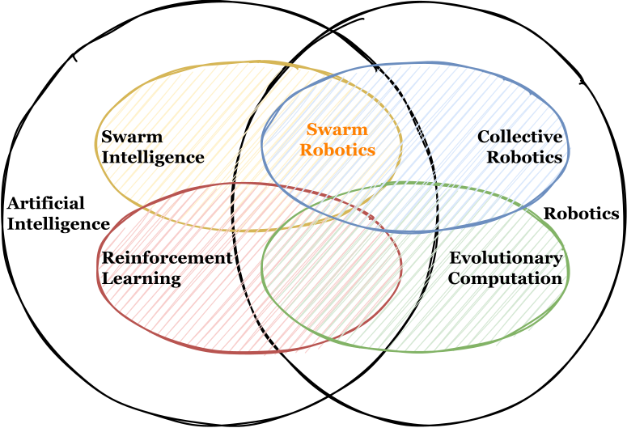

Bio
I’m a BSMS candidate at the EECS department at IISERB. My research interests lie in the field of swarm robotics and collective intelligence, with a particular focus on natural systems. I am fascinated by the idea of building artificial collectives that possess the same scale and complexity as those found in nature, and I am determined to explore this question from a variety of different angles, including robotics, biology, and theory. Through my research, I hope to gain a deeper understanding of the underlying principles that drive the behavior of these systems and to develop new and innovative approaches to designing and building nature-inspired robot collectives. I hope you find it interesting and informative, and I look forward to sharing more with you in the future.
Research
- Robotics, Swarm Robotics
- Collective Intelligence, Artificial Intelligence
- Evolutionary Computation, RL algorithms

Education
Indian Institute of Science Education and Research Bhopal
MP, India
Integrated BS MS in Electrical Enginering and Computer Science | August 2017 - Present (Expected April 2023)
Selected Projects
Publications
Moving Depot: An Efficient Depot Motion Strategy for Multi-Robot Foraging. Pratik Ingle, Ananya Gandhi, and P.B. Sujit. 2022.(In preparation)Preprint